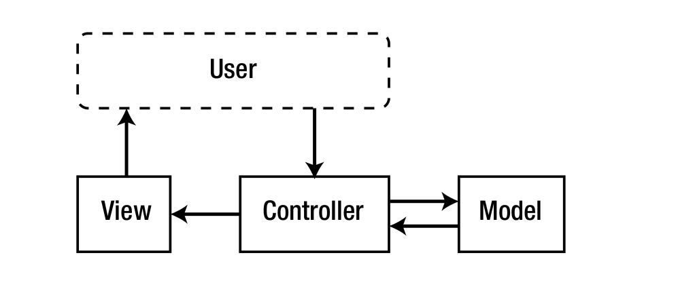

Este libro está dirigido tanto a desarrolladores nuevos como antiguos. Está diseñado de tal manera que primero se explican los conceptos básicos y luego se cubren los temas avanzados. Esto significa que los desarrolladores más experimentados pueden encontrar ciertas secciones (como las que explican los patrones de diseño) como obsoletas. Si este es usted, siéntase en libertad de pasar a las cosas más desafiantes. Si es nuevo en la programación orientada a objetos, la construcción de marcos o PHP en general, le recomendaría leer todo y tomar descansos entre la lectura para recapitular lo que ha aprendido al codificar algo.
Este libro no te enseñará PHP. Se asume que tiene conocimientos básicos de PHP y que al menos se siente cómodo con la creación de sitios web PHP. Si es nuevo en PHP o nunca lo ha usado, le sugiero que eche un vistazo a Beginning PHP 5 y MySQL por W. Jason Gilmore (Apress, 2010) (www.apress.com/9781893115514), ya que le dará una excelente comprensión de PHP.
Este libro no le enseñará cómo ser un experto en CodeIgniter, Zend Framework o CakePHP. Si bien estos marcos se discuten y utilizan en el transcurso de este libro, el propósito de su uso es ilustrar las diferencias entre sus enfoques y el enfoque que tomamos al construir nuestro propio marco. En consecuencia, hay una variedad de formas en las que podrían usarse de manera más eficiente o en un estilo recomendado por sus respectivas comunidades y documentación. El propósito de su uso aquí es puramente ilustrativo.
Si tiene curiosidad por aprender a desarrollar mejor mediante la programación orientada a objetos, o mediante la creación de marcos, o mediante el diseño de API claras y coherentes, entonces disfrutará de este libro.
Si tiene curiosidad sobre lo que implica la creación de frameworks MVC populares (como los demostrados en los capítulos posteriores) o por qué han elegido ciertos caminos de desarrollo, entonces disfrutará de este libro. Si desea convertirse en un mejor programador, espero que encuentre este libro invaluable.
Cada línea de código de este libro se refleja en el código contenido en los archivos (que se puede descargar del sitio complementario). Si bien se ha realizado un gran esfuerzo para garantizar que el código sea sintáctica-mente sólido (y, por lo tanto, se ejecutará directamente en su editor de código), puede haber ocasiones en las que se omitan las dependencias para ayudar a acortar algunos de los listados de código más largos. Cuando este sea el caso, puede estar seguro de que el código omitido ya es el que se ha explicado y creado en capítulos anteriores o en páginas anteriores dentro del mismo capítulo. En caso de duda o si tiene problemas para ejecutar el código fuente, consulte los archivos de código fuente.
El desarrollo de software no es una idea nueva. Se dice que Ada Lovelace escribió el primer programa de computadora a mediados del siglo XIX para Analytical Engine, la primera computadora mecánica prototipada por Charles Babbage. Ha pasado mucho tiempo desde entonces, y el desarrollo de software se ha convertido en lo que posiblemente sea uno de los mayores contribuyentes al desarrollo de nuestra especie. Diseñar un buen software es difícil. Implica tener en cuenta todos los aspectos de la aplicación que necesita construir, y se complica aún más por la necesidad de ser lo suficientemente específico para sus requisitos actuales para hacer el trabajo, al mismo tiempo que es lo suficientemente genérico para abordar problemas futuros. Muchos desarrolladores experimentados han tenido estos problemas y, con el tiempo, han surgido patrones comunes que ayudan a resolverlos. Christopher Alexander, un arquitecto estructural, describió por primera vez los patrones de tal manera que se puedan aplicar al desarrollo de software. Dijo: “Cada patrón describe un problema que ocurre una y otra vez en nuestro entorno, y luego describe el núcleo de la solución a ese problema, de tal manera que puede usar esta solución un millón de veces, sin tener que hacerlo nunca. de la misma manera dos veces '. Podría haber estado hablando de casas o ciudades, pero sus palabras capturan la esencia de lo que pretendemos hacer al considerar cómo podemos construir un marco sólido, seguro y re-utilizable para aplicaciones web.
MVC (Model-View-Controller) es un patrón de diseño de software construido alrededor de la ínter-conexión de tres tipos de componentes principales, en un lenguaje de programación como PHP, a menudo con un fuerte enfoque en paradigmas de software de programación orientada a objetos (OOP). . Los tres tipos de componentes se denominan vagamente modelos, vistas y controladores. Hablemos de ellos individualmente y luego veamos cómo encajan. El modelo es donde se guarda toda la lógica comercial de una aplicación. La lógica empresarial puede ser cualquier cosa específica sobre cómo una aplicación almacena datos o utiliza servicios de terceros para cumplir con sus requisitos comerciales. Si la aplicación debe acceder a información en una base de datos, el código para hacerlo se mantendrá en el modelo. Si necesita, por ejemplo, obtener datos de existencias o tuitear sobre un nuevo producto, ese código también se mantendría en el modelo. La vista es donde se guardan todos los elementos de la interfaz de usuario de nuestra aplicación. Esto puede incluir nuestro marcado HTML, hojas de estilo CSS y archivos JavaScript. Todo lo que un usuario ve o con lo que interactúa se puede mantener en una vista y, a veces, lo que el usuario ve es en realidad una combinación de muchas vistas diferentes en la misma solicitud. El controlador es el componente que conecta modelos y vistas entre sí. Los controladores aíslan la lógica empresarial de un modelo de los elementos de la interfaz de usuario de una vista y manejan cómo responderá la aplicación a la interacción del usuario en la vista. Los controladores son el primer punto de entrada a este trío de componentes, porque la solicitud se pasa primero a un controlador, que luego creará una instancia de los modelos y vistas necesarios para cumplir con una solicitud a la aplicación. Ver la Figura 1-1
No tiene sentido explicar qué es MVC sin saber por qué debería usarlo. ¿Recuerda los patrones de Christopher Alexander que mencioné antes? MVC es uno de los muchos patrones que se explicarán en este libro, pero para comprender la utilidad de este patrón de diseño, debemos mirar hacia los problemas que ayuda a aliviar. Si piensa en un equipo deportivo, es posible que se dé cuenta de que se trata esencialmente de un gran grupo de jugadores que cumplen sus roles individuales para impulsar al equipo hacia adelante. Los buenos equipos deportivos requieren el esfuerzo de cada jugador para que desempeñe su papel lo mejor que pueda para impulsar al equipo en su conjunto. La Web es un campo de juego abierto. Permite a las empresas, tanto grandes como pequeñas, competir entre sí sin que el tamaño sea un factor en la calidad del trabajo. Esto significa que muchas empresas pequeñas con grupos de desarrolladores pequeños pueden tener la oportunidad de crear grandes aplicaciones web. También significa que muchas grandes empresas pueden tener muchas personas trabajando en grandes aplicaciones web al mismo tiempo. En toda esta multi-tarea y / o participación grupal, los aspectos de una aplicación (que deben estar separados) a menudo interfieren entre sí y requieren más tiempo y esfuerzo del estrictamente necesario para avanzar. Hay muchos aspectos en cualquier aplicación web complicada. Existe el diseño, que despierta el interés del usuario en el producto. Se requiere una lógica empresarial para hacer cosas prácticas, como procesar artículos de venta y facturar a los compradores. Luego está el proceso continuo de mejora, actualización, corrección de errores y racionalización general de la aplicación. En cualquier aplicación no estructurada, estas áreas tienden a fundirse juntas en un lío incoherente. Cuando la base de datos debe cambiarse para adaptarse a una nueva línea de productos, o la empresa decide cambiar la marca, no solo afecta el código que debería. Más desarrolladores deben involucrarse para asegurarse de que los cambios en una parte de la aplicación no rompan inmediatamente otras partes de la aplicación. Los cambios que solo deberían afectar a una pequeña sección del código terminan extendiéndose a todo tipo de áreas extrañas y problemáticas. Este es el problema que MVC busca abordar. Define contenedores estrictos para todo el código de una aplicación y características. Cuando los cambios en el código de la base de datos están aislados en un modelo, las vistas y los controladores no se romperán. Cuando la ilustración de una aplicación cambia drásticamente, su controlador y modelo estarán a salvo de cambios importantes.
Ahora que sabemos más sobre por qué deberíamos usar MVC, veamos algunas alternativas populares a escribiendo nuestro propio marco.
Hay muchos frameworks PHP geniales disponibles, pero si limitamos nuestra vista a solo tres, creo que podemos tener una buena idea de lo que tienen en común y lo que hace que cada uno sea especial. Estos no son los mejores ni los únicos frameworks PHP MVC, sino simplemente una buena muestra de los diferentes enfoques para el desarrollo PHP MVC.
CodeIgniter es el primero y más simple de los marcos que analizaremos. Está desarrollado y mantenido por EllisLab y puede describirse como un marco de código abierto (aunque estrictamente controlado) que forma la base del CMS (Sistema de gestión de contenido) premium de EllisLab, ExpressionEngine. Ha existido durante siglos, sin embargo, sus ideales han cambiado muy poco en todos los años desde que lo usé por primera vez. Se esfuerza por mantener una huella pequeña, una excelente documentación para desarrolladores y una alta calidad de código. No disfruta de los mismos niveles de popularidad que algunos de los otros marcos de los que hablaremos, y esto se debe en parte a cómo EllisLab ha gestionado la comunidad CodeIgniter. Recientemente han comenzado a abordar este problema con nuevos conferencias y personal, y las cosas están mejorando para este marco. También ha inspirado otros frameworks, dando origen a proyectos como KohanaPHP.
Zend Framework es una colección extensa de bibliotecas de código poco acopladas que pueden formar la base de una arquitectura MVC. Zend Framework requiere bastante esfuerzo para comprender y dominar en relación con otros marcos MVC populares. Está desarrollado por Zend Technologies y disfruta de todos los beneficios de una comunidad grande y estable y de una amplia adopción. Mientras que los marcos como CodeIgniter se esfuerzan por ser livianos, favoreciendo solo lo esencial, Zend Framework incluye bibliotecas que ayudan a los desarrolladores a utilizar una amplia gama de servicios y API de terceros.
CakePHP es posiblemente el más popular de los tres marcos. A diferencia de los dos marcos anteriores, no se rige por ninguna entidad corporativa. Tiene una gran comunidad y es ampliamente adoptado.
Favorece la convención sobre la configuración, lo que significa que muchos de los detalles más finos se asumen y automatizan. Esto es evidente en todas las áreas del marco, y a menudo te encontrarás preguntándote cómo CakePHP está haciendo algo que no le pediste que hiciera, tanto bueno como malo. Esto significa que puede desarrollar una aplicación rápidamente, pero también que puede tener dificultades cuando necesite realizar cambios muy específicos.
Esto incluso se ve en la herramienta de línea de comando de generación de código: Bake. En cuestión de minutos, puede generar una aplicación que funcione, simplemente siguiendo las indicaciones de la línea de comando y llenando los espacios en blanco con los parámetros y comportamientos predeterminados.
Nos centraremos en el patrón de diseño de MVC, y para lograrlo, deberemos usar otros patrones de diseño más simples para las bibliotecas en las que se construye el marco. Los patrones de diseño que revisaremos a menudo se pueden aplicar al desarrollo de procedimientos, pero los estaremos mirando en el contexto de la programación orientada a objetos.
Esto significa que estaremos tratando con clases (planos que contienen propiedades y funciones de realización), y cómo interactúan entre sí. Si no está familiarizado con algunos de los conceptos que siguen, es posible que desee referirse a la imprimación de alojamiento, o al sitio de referencia.
Cuando construimos software OOP, tratamos con muchas clases. Si bien es ideal para diseñar estas clases de tal manera que muchos casos pueden estar activos simultáneamente, habrá ocasiones en que solo necesitamos prácticamente una instancia de una clase, para un propósito o contexto específico.
Singleton es un patrón de diseño que garantiza que una clase solo pueda tener una instancia a la vez. Una clase de singleton tradicional mantiene una instancia de sí misma en una propiedad estática interna, y no puede ser instanciada (o clonada) de la manera habitual de que una clase que no sea singleton. Singletons tiene un método de accesorios de instancia especial, que devuelve la propiedad de instancia interna, o crea una nueva instancia para devolver y almacenar.